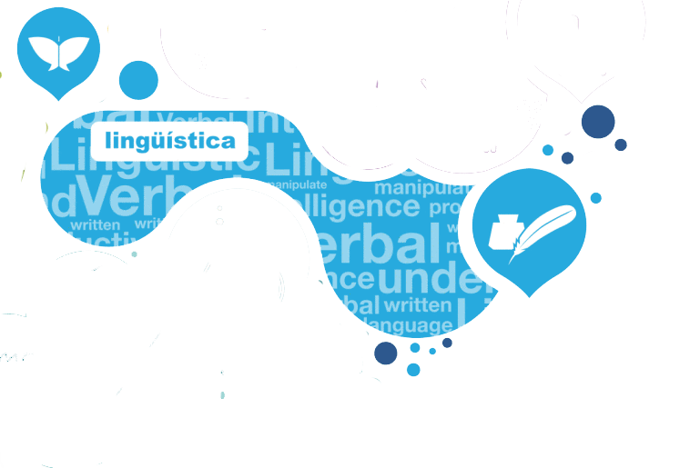
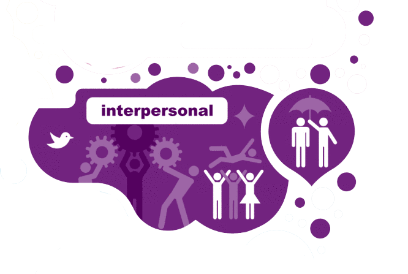
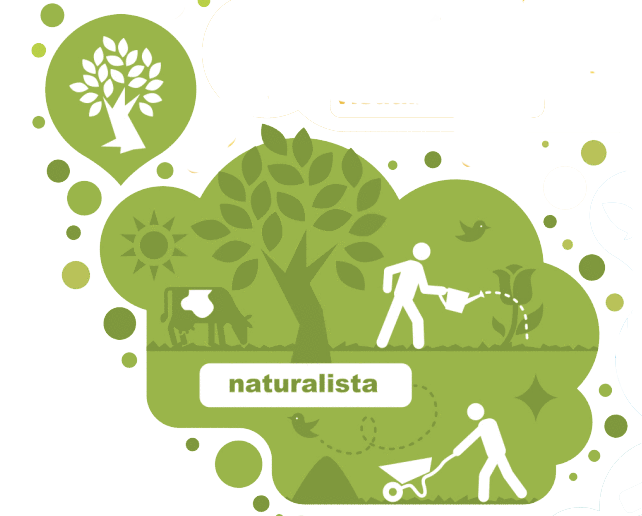
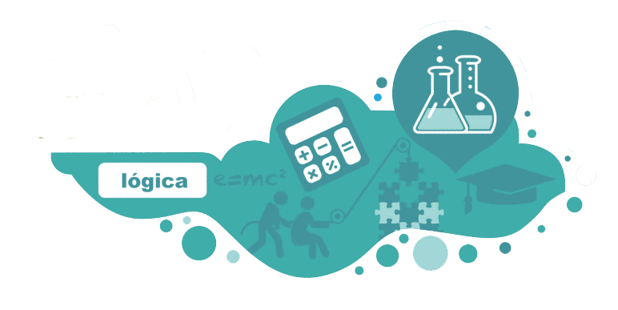
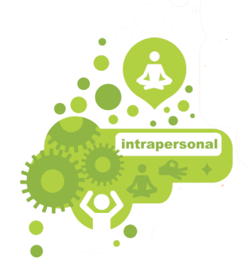
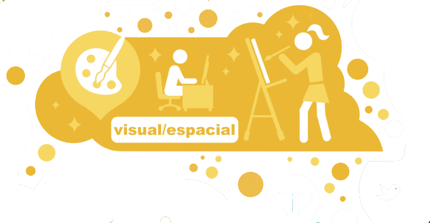
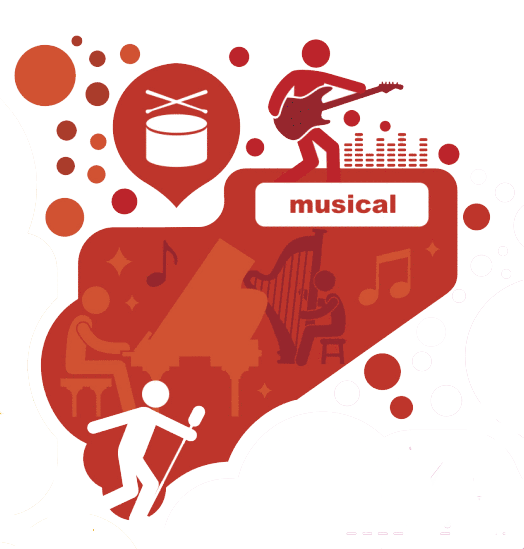
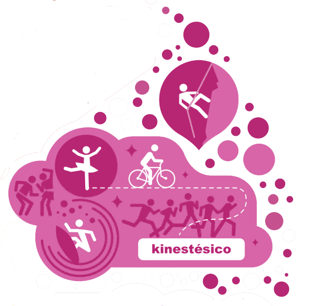
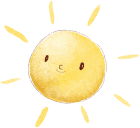
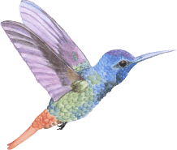

Sensibilidad al significado de las palabras, su orden y funciones, su sonido, ritmos y métrica.


Modelo Pedagógico
Nuestro Modelo Pedagógico
El colegio el placer de aprender concibe el aprendizaje como un proceso mediante el cual el ser humano modifica y adquiere aquellas habilidades, destrezas, conocimientos, conductas o valores necesarios para su desarrollo personal, y entiende que este proceso valida varios escenarios. Por eso potencializamos las inteligencias múltiples
"Todo lo que vale la pena enseñar se puede presentar de muchas maneras diferentes. Estas formas múltiples pueden hacer uso de nuestras inteligencias múltiples". Gardner.

Lingúistica
GuardianSensibilidad para entender a otros, empatizar, establecer relaciones, interactuar y liderar.

Interpersonal
GuardianTalento para observar, comprender y explorar el medio natural.

Naturalista
GuardianCapacidad para trabajar con números y operaciones, deducir y razonar con conceptos abstractos.

Logíca
GuardianCapacidad para conocer los propios sentimientos, pensamientos u objetivos, tendencia a reflexionar y actuar en consecuencia.

Intrapersonal
GuardianCapacidad para conocer los propios sentimientos, pensamientos u objetivos, tendencia a reflexionar y actuar en consecuencia.

Visual / espacial
GuardianHabilidad para captar el ritmo, el tono y el timbre, y sensibilidad para apreciar y expresar a través de la música.

Musical
GuardianHabilidad para el baile y el movimiento, para utilizar el propio cuerpo como medio de expresión y aprender a través de la experimentación física.

Kinestésico
GuardianSensibilidad al significado de las palabras, su orden y funciones, su sonido, ritmos y métrica.
Lingúistica
GuardianSensibilidad para entender a otros, empatizar, establecer relaciones, interactuar y liderar.
Interpersonal
GuardianTalento para observar, comprender y explorar el medio natural.
Naturalista
GuardianCapacidad para trabajar con números y operaciones, deducir y razonar con conceptos abstractos.
Logíca
GuardianCapacidad para conocer los propios sentimientos, pensamientos u objetivos, tendencia a reflexionar y actuar en consecuencia.
Intrapersonal
GuardianCapacidad para conocer los propios sentimientos, pensamientos u objetivos, tendencia a reflexionar y actuar en consecuencia.
Visual / espacial
GuardianHabilidad para captar el ritmo, el tono y el timbre, y sensibilidad para apreciar y expresar a través de la música.
Musical
GuardianHabilidad para el baile y el movimiento, para utilizar el propio cuerpo como medio de expresión y aprender a través de la experimentación física.
Kinestésico
Guardian
